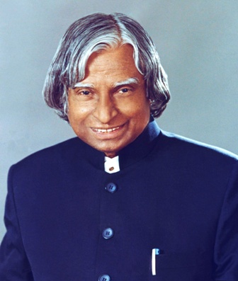

Avul Plair Jainulabdeen Abdul Kalam widely known as India's Missile Man.

He know more was
India's 11th President
Aerospace scientist
Author
Dr. APJ Abdul Kalam was the eleventh President of India, serving from 2002 to 2007. He was born on May 15, 1931, in Rameswaram, Tamil Nadu, and studied physics as well as aeronautical engineering. In 2002, APJ Abdul Kalam was chosen as India’s 11th President, Having backing from both the ruling Bharatiya Janata as well as the opposing Indian National Congress After his one tenure as President, APJ Abdul Kalam resumed civilian life in teaching, writing, and public service.
Rameshwaram Elementary School, Even though APJ Abdul Kalam was an average student, his desire to read and spend hours studying and learning Mathematics
He proved to create a strong foundation in his initial stage of education. Upon completing his schooling at Rameshwaram Elementary School and Schwartz Higher Secondary School
In 1955, he graduated from Saint Joseph’s College at Tiruchirappalli with a diploma in physics.
He subsequently went to Madras to further his education, graduating from the Engineering And Technology Institute with a diploma in aircraft engineering. His dream of becoming a military pilot was crushed when the IAF only had eight slots available, and he finished ninth.
On graduation from the University of Madras in 1960, APJ Abdul Kalam returned to theDefence Research and Development organisation Organisation as a scientist (DRDO). He began his career by creating a tiny hovercraft, however his position with the DRDO did not persuade him. APJ Abdul Kalam was moved to the Space Research Organisation (ISRO) in 1969 as the project head of India’s first Satellite Launch Vehicle, which successfully launched the Rohini satellite into relatively near orbit in July 1980. Raja Ramanna also invited APJ Abdul Kalam to see the country’s first nuclear test, Laughing Buddha, as the spokesman of TBRL. However, he had never participated in its development.
Sir Kalam was the rightful 11th Indian President. His presidency lasted from July 25, 2002, to July 25, 2007. He was elected with a huge margin of victory in a presidential election in 2002. The National Democratic Alliances’ nomination for President was endorsed by the Samajwadi Party and the National Congress Party. He was often referred to as the people’s President because of his numerous contributions to the well-being of the people and the country. He was daring and brave enough to make and implement difficult, delicate, or contentious judgments. he ability to work for the “House of Commons.”
Padma Bhusan
Padma Vibhushan
Bharat Ratna
Indira Gandhi Award
Indian National Congress
Veer Savarkar Award
Ramanujan Award
King Charles II Medal
Hoover Medal
Von Braun Award
Shillong, Meghalaya, on July 27, 2015.The day we left a man who desired a miracle for India’s youth was a bad day for India. He falls inside the lecture hall only 5 minutes into it, about 6:35 p.m. In critical condition, he was brought to ‘Bethany Hospital.’ He was maintained in the intensive-care unit but showed no signs of life, and he was certified dead at 7:45 p.m. because of cardiac arrest. APJ Abdul Kalam is a very kind-hearted individual who generously performed many things for India. He is indeed the reason we have nuclear weapons today. He not only became President & did a lot of good for India, but he also made a significant contribution to missile history.